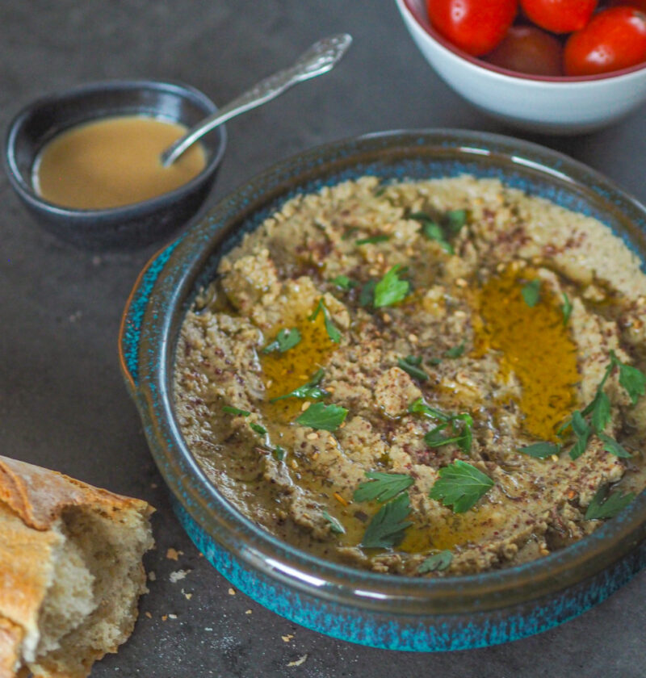

Baba Ghanoush

Baba Ghanoush (porcja na kilka porządnych kanpek lub kolację dla 2-3 osób)
Składniki
- 1kg bakłażanów upieczonych na grillu, nad ogniskiem, w piekarniku lub opalonych nad palnikiem gazowym
- 2 spore ząbki czosnku starte na tarce
- 2 łyżki soku z cytryny
- 3 łyżki tahini
- sól do smaku (zacznijcie od 1/2 łyżeczki)
Wykonanie
- Bakłażany obieramy, kroimy, ogólnie wydobywamy środek. Skórkę odrzucamy.
- Wrzucamy bakłażana i wszystkie pozostałe składniki do malaksera lub misy blendera i blendujemy do uzyskana gładkiej masy.
- Podajemy z z’atarem, sumakiem, pietruszką i oliwą z oliwek do porządnego, świeżego pieczywa.
Home